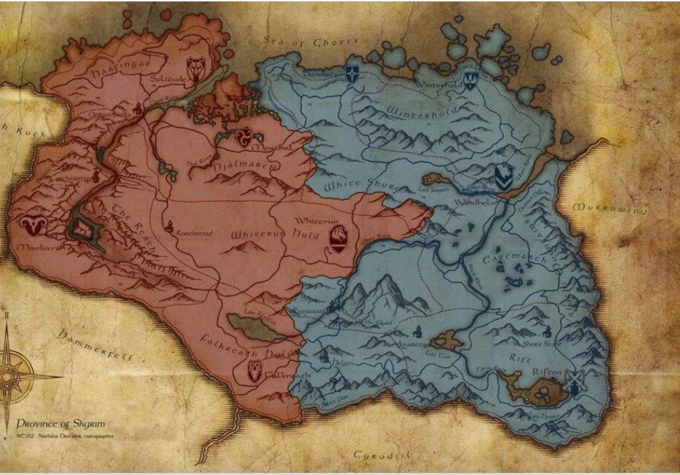
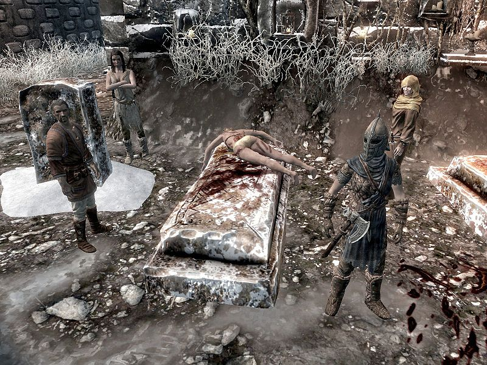

Windhelm Sentinel
Join the War

Skyrim Belongs to the Nords, and if you agree you're welcome to fight for it. All races are welcome to fight for Skyrim's independence. High Elves will be looked at with a great amount of scrutiny.
Help Wanted
- Aventus Aretino seeks the help of individuals with a certain set of skills
- Tulvur at Hollyfrost Farm is ready for the season's harvest!
War Watch
Glad Tidings as Ulfric Stormcloak escapes the headsman in Helgen
The War Continues apace this week, with Ulfrics Escape from Helgen. Reports have been confirmed by survivors that a Dragon did indeed appear and raid the city, though noone can ascertain why the dragon began it's assault in the first place. Ulfric is beefing up patrols in the area and is confident that his mastery of the voice will deter any attacks upon Windhelm
No new claimants have been made though Ulfric is being said to be preparing for many major attacks and even has a bead on the location of the Jagged Crown. More updates will follow throughout the week as events unfold.
Serial Killer On the Loose
The Butcher has claimed another victim in Susanna, famed barmaid of Candlehearth Hall.
Found by the guards in the graveyard, the body was slashed repeatedly. Witness Calixto Corrium claimed that he saw 'a fellow running away' but didn't get a good look at him'. No other witnesses were found.
This is, of course, the fourth killing in as many weeks and citizens are wondering what will be done and when the streets of Windhelm will be safe once again Gaurds say they're trying their best but the war has simply stretched their resources too thin. Any assistance in resolving this matter will be accepted and compensated for